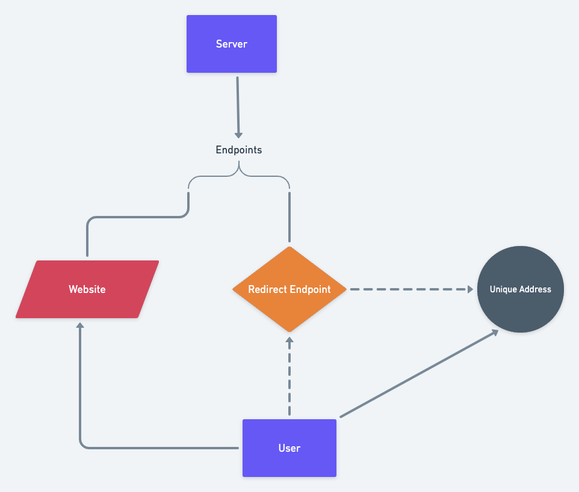

What is it?
CSS Fingerprinting is a technique of tracking and gathering information on site visitors. This method exploits the nature of CSS to track various characteristics about the visitor's browser and device, which can later be used to either identify or track said visitor.
How does it work?
By sending a variety of media queries that apply to specific browser characteristics, the browser will select a set of styles that apply to itself. We then trick the browser into sending this information back to the server by setting the background-image of these styles to a spesific url. The server will then respond with HTTP Status 410 (Gone) to avoid any requests of these charecteristics on subsequent reloads.
For example, to detect the type of pointer input:
Installed fonts can also be detected in a similar manner:
However, this works a little differently; every font not installed on device will send a request. By comparing differences between the requests and the full list of fonts, we can draw conclusions about what fonts are installed.
We can also track visitors cross-origin by making a request to an endpoint on the server that will return a permanent redirect (HTTP status 308) to a unique address. The browser will then permanently make requests to the previously generated unique address whenever the endpoint is requested.

Why is this important?
This technique avoids anti-tracking methods such as noScript, VPNs or browser extensions, as it requires no Javascript or Cookies to function.
Currently, this method is not scalable as it requires over 1MB of CSS downloads and hundreds of requests per user. However, with the next upcoming draft of the CSS specification, CSS Values 4, it may dramatically shrink the number of requests per user by allowing the use of custom variables in urls.
Not only will the upcoming draft make this method scalable, but it will also increase its precision. Currently, without alternative means, it is hard to conclusively link every request to a specific visitor as the only feasible way to determine their origin, is to group the requests by the IP address of the connection. However, with the new draft, by generating a randomised string and interpolating it into the URL tag for every visitor, we can accuratly identify all requests from said visitor.
See demo by clicking 'I Agree' below.
Participation Consent Form
By clicking 'I Agree', you consent to the collection of your personal information. This information will be used in the creation and publishing of a statistical analysis into the efficacy of CSS based fingerprinting.
Collected information collected will include:
- Device characteristics, such as screen width, height or DPI etc.
- HTTP headers such as the user-agent string and accepted responses.
- Browser family and version.
- Fonts installed on the device.
- The IP address of the connection (to filter participants entering multiple times from the same device).
- Personalised information such as names, ages and addresses.
- Biometric data such as fingerprints.
- The port used to establish the connection.
- Information collected using javascript-based fingerprinting methods.
- Cookies or other temporary cache based information.
This information will be stored for the duration of the study, after which, this information will be published alongside the study and will be freely available to the public (with data points such as IP addresses removed).
Please direct any questions, technical issues, improvements or feedback that you may have to the issues page.
All back-end and front-end code used in the collection of infomation can be found here.